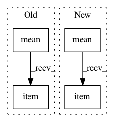

6b0a84c6977fc79bb2953d55e4d36db530f35496,examples/qm9_nn_conv.py,,,#,50
Before Change
dataset = QM9(path, transform=transform).shuffle()
// Normalize targets to mean = 0 and std = 1.
mean = dataset.data.y[:, target].mean().item()
std = dataset.data.y[:, target].std().item()
dataset.data.y[:, target] = (dataset.data.y[:, target] - mean) / std
// Split datasets.
After Change
dataset = QM9(path, transform=transform)
// Normalize targets to mean = 0 and std = 1.
mean = dataset.data.y.mean(dim=0, keepdim=True)
std = dataset.data.y.std(dim=0, keepdim=True)
dataset.data.y = (dataset.data.y - mean) / std
mean, std = mean[:, target].item(), std[:, target].item()
// Split datasets.
test_dataset = dataset[:10000]
In pattern: SUPERPATTERN
Frequency: 4
Non-data size: 4
Instances
Project Name: rusty1s/pytorch_geometric
Commit Name: 6b0a84c6977fc79bb2953d55e4d36db530f35496
Time: 2019-11-05
Author: matthias.fey@tu-dortmund.de
File Name: examples/qm9_nn_conv.py
Class Name:
Method Name:
Project Name: rusty1s/pytorch_geometric
Commit Name: 7b8716403efd3cee3fd62f50d2e2e4b2183a90b6
Time: 2018-04-30
Author: matthias.fey@tu-dortmund.de
File Name: examples/cora_gcn.py
Class Name:
Method Name:
Project Name: mariogeiger/se3cnn
Commit Name: 284f27c366884ed821b6c7b1ed37b32fa51f8c25
Time: 2019-08-08
Author: geiger.mario@gmail.com
File Name: se3cnn/non_linearities/rescaled_act.py
Class Name: ShiftedSoftplus
Method Name: __init__
Project Name: mozilla/TTS
Commit Name: 94c6cb8e0777e0d688ac596ca6c8b23e76331070
Time: 2020-01-14
Author: root@sp-mlc3-5423-0.mlc
File Name: utils/measures.py
Class Name:
Method Name: alignment_diagonal_score